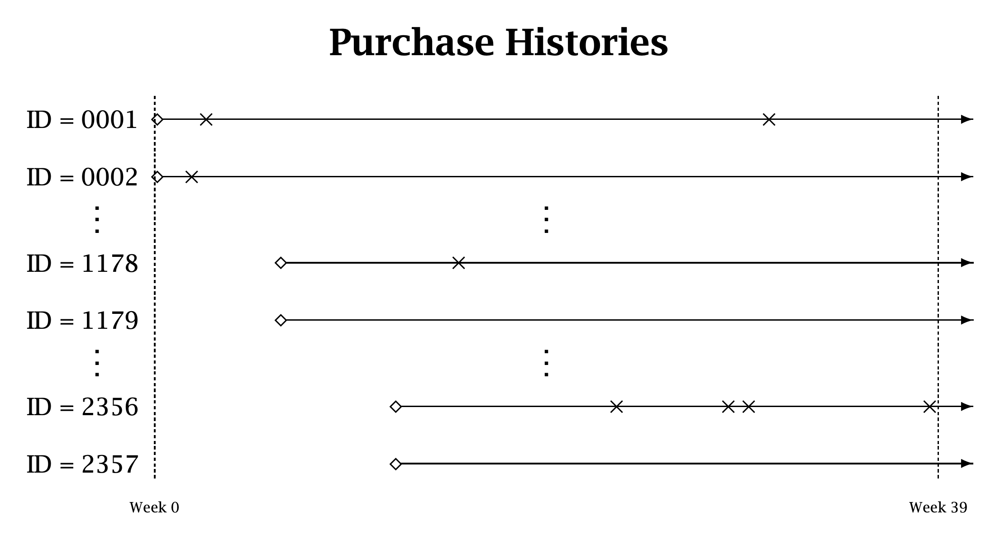
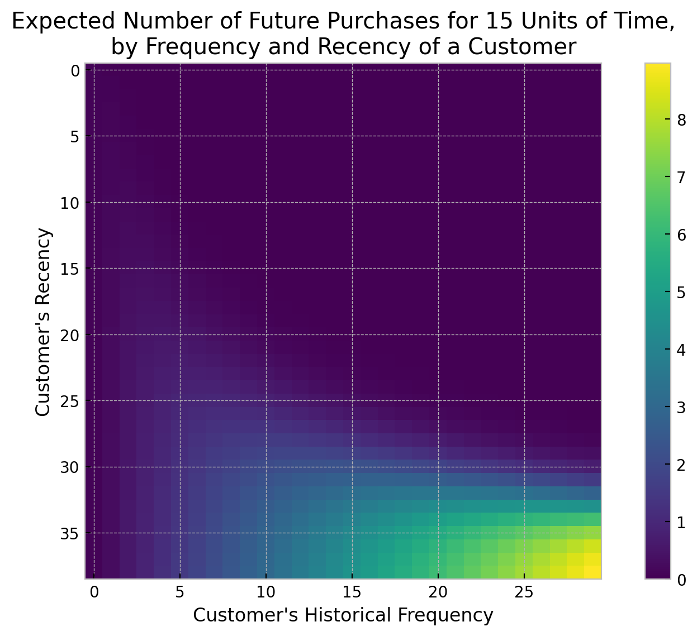
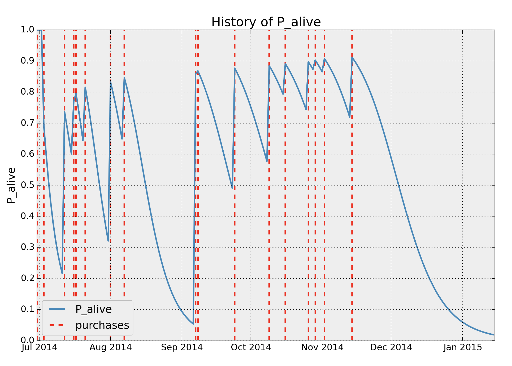
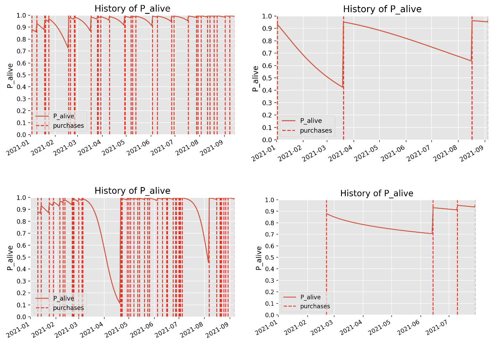
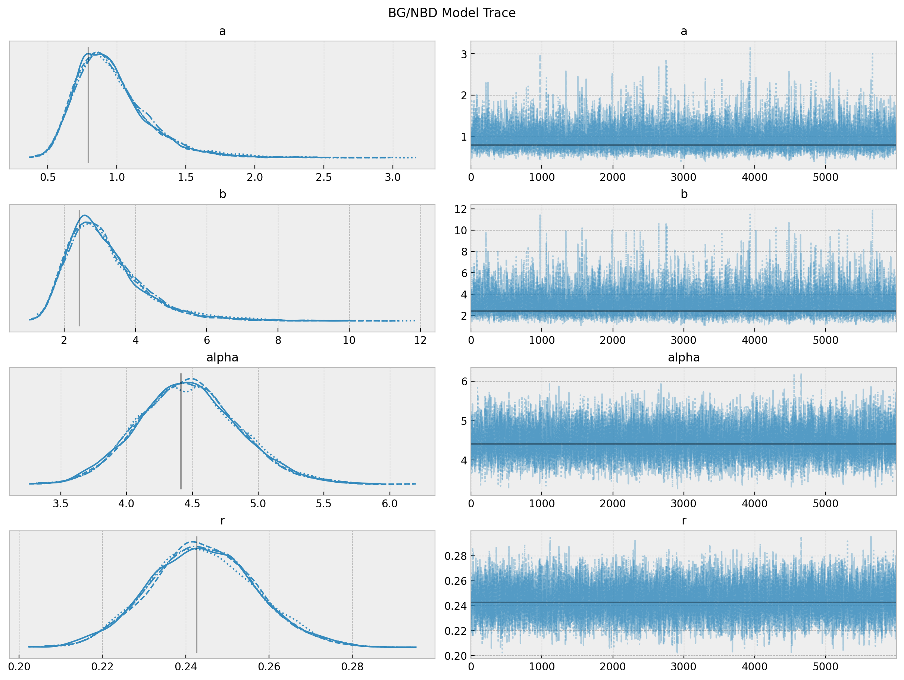
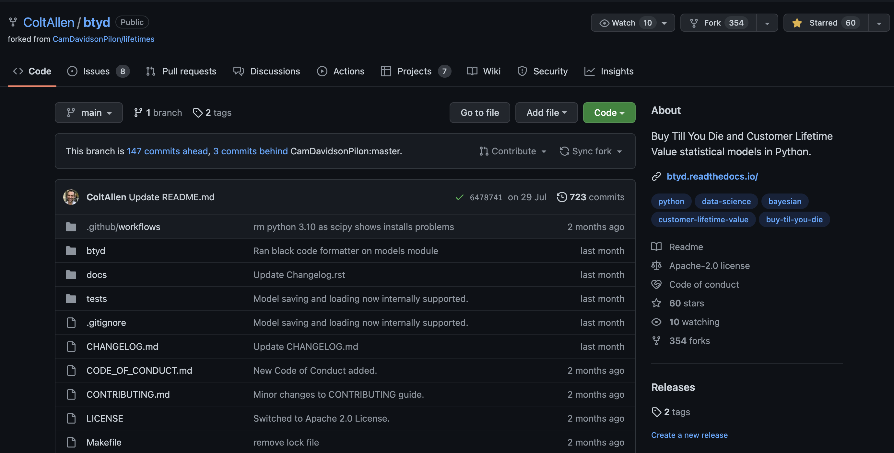

Introduction to BTYD (Buy Until You Die) Models
Berlin Bayesians MeetUp - September 2022
Dr. Juan Orduz
Classifying Customer Bases

Purchase Histories
Models Workflow
%%{init: {"theme": "dark" } }%%
%%| fig-width: 10
flowchart LR
A[Transaction Data] --> B(Transaction Model - BG/NBD)
A --> C(Monetary Model - GG)
B --> D[Probability of Alive]
B --> E[Predicted Frequency]
C --> F[Predicted Avg. Monetary Value]
E --> G[Predicted CLV]
F --> G[Predicted CLV]
- Transaction Model: Number of transactions per customer.
- Monetary Model: Average monetary value of a transaction.
The BG/NBD Model

Purchase Metrics
frequency: Number of repeat purchases the customer has made. More precisely, It’s the count of time periods the customer had a purchase in.T: Age of the customer in whatever time units chosen (weekly, in the above dataset). This is equal to the duration between a customer’s first purchase and the end of the period under study.recency: Age of the customer when they made their most recent purchases. This is equal to the duration between a customer’s first purchase and their latest purchase.
BG/NBD Assumptions (Frequency)
While active, the time between transactions is distributed exponential with transaction rate, i.e.,
\[f(t_{j}|t_{j-1}; \lambda) = \lambda \exp(-\lambda (t_{j} - t_{j - 1})), \quad t_{j} \geq t_{j - 1} \geq 0\]
Heterogeneity in \(\lambda\) follows a gamma distribution with pdf
\[f(\lambda|r, \alpha) = \frac{\alpha^{r}\lambda^{r - 1}\exp(-\lambda \alpha)}{\Gamma(r)}, \quad \lambda > 0\]
BG/NBD Assumptions (Dropout)
After any transaction, a customer becomes inactive with probability \(p\).
Heterogeneity in p follows a beta distribution with pdf
\[f(p|a, b) = \frac{\Gamma(a + b)}{\Gamma(a) \Gamma(b)} p^{a - 1}(1 - p)^{b - 1}, \quad 0 \leq p \leq 1\]
The transaction rate \(\lambda\) and the dropout probability \(p\) vary independently across customers.
Likelihood: Easy to Compute!
\[ L(a, b, \alpha, r|X=x, t_x, T) = A_{1}A_{2}(A_{3} + \delta_{x>0}A_4) \]
where
\[\begin{align*} A_{1} = \frac{\Gamma(r + x)\alpha^{{r}}}{\Gamma(x)} \quad A_{2} & = \frac{\Gamma(a + b)\Gamma(b + x)}{\Gamma(b)\Gamma(a + b + x)} \\ A_{3} = \left(\frac{1}{\alpha + T}\right)^{r+x} \quad A_{4} & = \left(\frac{a}{b + x - 1}\right)\left(\frac{1}{\alpha + t_x}\right)^{r + x} \end{align*}\]
Strategy: Write this in numpy as pass it through scipy.optimize.minimize
Inference: lifetimes Package
The four BG/NBD model parameters can be estimated via the method of maximum likelihood.
import numpy as np
import pandas as pd
from lifetimes.datasets import load_cdnow_summary
from lifetimes import BetaGeoFitter
data_df: pd.DataFrame = load_cdnow_summary(index_col=[0])
n = data_df.shape[0]
x = data_df["frequency"].to_numpy()
t_x = data_df["recency"].to_numpy()
T = data_df["T"].to_numpy()
bgf = BetaGeoFitter()
bgf.fit(frequency=x, recency=t_x, T=T)Predicted Future Purchases
Probability of Alive
from lifetimes.plotting import plot_probability_alive_matrix
ax = plot_probability_alive_matrix(model=bgf)

Probability of Alive
From Numpy to Aesara
We can re-write the numpy likelihood implementation in aesara.
Log-Likelihood in Aesara
The translation bewtween numpy and aesara is very easy (replace np by at)!
import aesara.tensor as at
def logp(x, t_x, T, x_zero):
a1 = at.gammaln(r + x) - at.gammaln(r) + r * at.log(alpha)
a2 = (
at.gammaln(a + b)
+ at.gammaln(b + x)
- at.gammaln(b)
- at.gammaln(a + b + x)
)
a3 = -(r + x) * at.log(alpha + T)
a4 = (
at.log(a) - at.log(b + at.maximum(x, 1) - 1) - (r + x) * at.log(t_x + alpha)
)
max_a3_a4 = at.maximum(a3, a4)
ll_1 = a1 + a2
ll_2 = (
at.log(
at.exp(a3 - max_a3_a4)
+ at.exp(a4 - max_a3_a4) * pm.math.switch(x_zero, 1, 0)
)
+ max_a3_a4
)
return at.sum(ll_1 + ll_2)BG/NBD PyMC Model
Model Structure
import pymc as pm
import pymc.sampling_jax
with pm.Model() as model:
a = pm.HalfNormal(name="a", sigma=10)
b = pm.HalfNormal(name="b", sigma=10)
alpha = pm.HalfNormal(name="alpha", sigma=10)
r = pm.HalfNormal(name="r", sigma=10)
def logp(x, t_x, T, x_zero):
...
likelihood = pm.Potential(
name="likelihood",
var=logp(x=x, t_x=t_x, T=T, x_zero=x_zero),
)Model Sampling
Probability of Active
How? Simply use the posterior samples (xarray) and broadcast the numpy expressions.
Time-Independent Covariates?
Allow covariates \(z_1\) and \(z_2\) to explain the cross-sectional heterogeneity in the purchasing process and cross-sectional heterogeneity in the dropout process respectively.
The likelihood and quantities of interests computed by computing expectations, remain almost the same. One only has to replace:
\[\begin{align*} \alpha & \longmapsto \alpha_{0}\exp(-\gamma_{1}^{T}z_{1}) \\ a & \longmapsto a_{0}\exp(\gamma_{2}^{T}z_{2}) \\ b & \longmapsto b_{0}\exp(\gamma_{3}^{T}z_{2}) \end{align*}\]
Simulated Example
np.random.seed(42)
# construct covariate
mu = 0.4
rho = 0.7
z = np.random.binomial(n=1, p=mu, size=x.size)
# change frequency values by reducing it the values where z !=0
x_z = np.floor(x * (1 - (rho * z)))
# make sure the recency is zero whenever the frequency is zero
t_x_z = t_x.copy()
t_x_z[np.argwhere(x_z == 0).flatten()] = 0
# sanity checks
assert x_z.min() == 0
assert np.all(t_x_z[np.argwhere(x_z == 0).flatten()] == 0)PyMC Model
with pm.Model() as model_cov:
a = pm.HalfNormal(name="a", sigma=10)
b = pm.HalfNormal(name="b", sigma=10)
alpha0 = pm.HalfNormal(name="alpha0", sigma=10)
g1 = pm.Normal(name="g1", mu=0, sigma=10)
alpha = pm.Deterministic(name="alpha", var=alpha0 * at.exp(- g1 * z))
r = pm.HalfNormal(name="r", sigma=10)
def logp(x, t_x, T, x_zero):
...
likelihood = pm.Potential(
name="likelihood",
var=logp(x=x_z, t_x=t_x_z, T=T, x_zero=x_zero_z),
)Effect in Parameters
…
Bayesian BG NBD Model
It opens many posibilities and oportunities!
- Hierarchical Models
- Time-Invariant Covariates
- …
A sucessor package of lifetimes
Contributors needed!